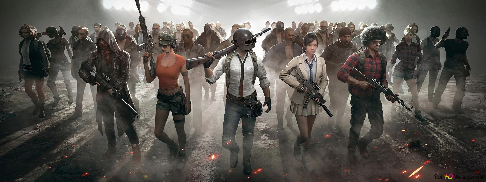

VideosJuegos
Los videojuegos se han convertido en una forma muy popular de entretenimiento en todo el mundo, y por muchas razones. En primer lugar, los videojuegos ofrecen una experiencia interactiva única que permite a los jugadores sumergirse en mundos virtuales y controlar la acción en tiempo real. Esto puede ser emocionante y atractivo para muchas personas. En segundo lugar, los videojuegos ofrecen una amplia variedad de géneros y estilos de juego, lo que significa que hay algo para todos. Los jugadores pueden elegir entre juegos de acción, aventuras, juegos de rol, juegos de estrategia, juegos de deportes y mucho más.
Además, los videojuegos ofrecen una experiencia personalizada y adaptada a cada jugador individual. Los juegos a menudo tienen múltiples niveles de dificultad y opciones de personalización, lo que permite a los jugadores ajustar el juego a sus habilidades y preferencias personales. Los videojuegos también son una forma conveniente de entretenimiento, ya que se pueden jugar en una variedad de plataformas, desde consolas de videojuegos hasta dispositivos móviles y computadoras. Esto significa que los jugadores pueden disfrutar de los juegos en cualquier momento y en cualquier lugar.
Además, los videojuegos a menudo tienen una comunidad de jugadores apasionados y dedicados que comparten información y estrategias en línea, lo que puede ser una fuente de interacción social y amistad para muchos jugadores. En resumen, los videojuegos son una forma popular de entretenimiento debido a su experiencia interactiva única, su amplia variedad de géneros y estilos de juego, su personalización para cada jugador individual, su conveniencia y su comunidad de jugadores apasionados. Los videojuegos son una forma emocionante y atractiva de pasar el tiempo y de conectarse con otros jugadores de todo el mundo.
Además de ser una forma de entretenimiento, los videojuegos también pueden ofrecer una serie de beneficios para los jugadores. Por ejemplo, los juegos de estrategia y los juegos de rompecabezas pueden ayudar a desarrollar habilidades cognitivas y de resolución de problemas. Los juegos de deportes y de fitness pueden ayudar a mejorar la coordinación y la aptitud física. Y los juegos de rol pueden ayudar a desarrollar habilidades sociales y de colaboración al trabajar en equipo con otros jugadores. También se ha demostrado que los videojuegos pueden ser una herramienta efectiva para la educación. Los juegos educativos pueden ayudar a los niños a aprender habilidades importantes como la lectura, las matemáticas y la ciencia de una manera más interactiva y atractiva que los métodos tradicionales. Y los juegos de simulación pueden ayudar a enseñar habilidades prácticas como la conducción de automóviles o el pilotaje de aviones.
Los videojuegos también pueden ser una forma de terapia y tratamiento para ciertas condiciones médicas. Por ejemplo, los juegos pueden ayudar a reducir el dolor y la ansiedad en pacientes hospitalizados, y se han utilizado juegos de realidad virtual para tratar trastornos de ansiedad y estrés postraumático. Por último, los videojuegos también pueden ser una forma de arte y expresión creativa. Muchos juegos tienen un diseño de nivel increíblemente detallado, gráficos impresionantes y música y efectos de sonido impactantes, lo que los convierte en una forma emocionante de arte interactivo.
Características
Una de las características más interesantes de los videojuegos es su capacidad para involucrar al jugador y proporcionar una experiencia inmersiva. Al controlar a un personaje en el juego, los jugadores pueden sentirse como si estuvieran viviendo la historia y las aventuras que se desarrollan en la pantalla. Esto puede hacer que los videojuegos sean una experiencia emocionalmente satisfactoria y gratificante. Los videojuegos también pueden ser una forma efectiva de aprender. Los juegos educativos, como los juegos de matemáticas y ciencias, pueden ayudar a los estudiantes a aprender conceptos importantes de manera más fácil y divertida. Los videojuegos también pueden ser útiles para enseñar habilidades de resolución de problemas y pensamiento crítico.
Otra característica interesante de los videojuegos es su capacidad para conectarnos con otros jugadores en línea. Los juegos en línea permiten a los jugadores competir y colaborar con otros jugadores de todo el mundo, lo que puede ayudar a mejorar la socialización y las habilidades de comunicación. Por otro lado, es importante tener en cuenta que algunos videojuegos pueden tener contenido inapropiado o violento, lo que puede ser perjudicial para los niños. También existe el riesgo de adicción a los videojuegos, que puede llevar a problemas de salud física y mental.
En resumen, los videojuegos son una forma de entretenimiento emocionante y atractiva que puede ser beneficiosa en muchos aspectos, incluyendo la educación, la socialización y el desarrollo de habilidades cognitivas. Sin embargo, es importante utilizarlos con moderación y tomar precauciones para evitar efectos negativos.
Hay muchas características que definen a los juegos, pero aquí hay algunas de las más importantes:
- Interactividad: Los juegos son interactivos, lo que significa que los jugadores pueden controlar y afectar lo que sucede en el juego. Esto proporciona una experiencia única y personalizada para cada jugador.
- Reglas: Los juegos tienen reglas claras y definidas que determinan cómo se juega el juego. Estas reglas pueden ser simples o complejas, y se utilizan para mantener el equilibrio y la justicia en el juego.
- Objetivos: Los juegos tienen objetivos claros que los jugadores deben alcanzar para ganar el juego. Estos objetivos pueden ser tan simples como llegar al final de un nivel o tan complejos como completar una historia o derrotar a un jefe final.
- Retos: Los juegos ofrecen desafíos para los jugadores, lo que significa que deben trabajar duro para superar los obstáculos y alcanzar los objetivos. Los retos pueden ser físicos, mentales o emocionales, y pueden ser diferentes para cada jugador.
- Progresión: Los juegos ofrecen una sensación de progreso y logro a medida que los jugadores avanzan en el juego. Esto puede ser a través de la acumulación de puntos, la adquisición de nuevas habilidades o la superación de desafíos más difíciles.
- Estética: Los juegos tienen un aspecto visual y auditivo distintivo que ayuda a crear la atmósfera del juego y a sumergir al jugador en el mundo virtual.
- Socialización: Los juegos pueden ser una actividad social y cooperativa, ya que muchos juegos permiten a los jugadores jugar juntos en línea o en persona. Esto puede ser una forma de conectarse con otros jugadores y construir comunidades.
Top Personajes Representativos
Es difícil hacer un ranking de los máximos representantes de los videojuegos, ya que hay muchos personajes y franquicias icónicas que han dejado su huella en la industria. Pero aquí hay algunos personajes y franquicias que son considerados por muchos como algunos de los más influyentes y representativos:
- Super Mario: El personaje principal de la franquicia de juegos de plataformas de Super Mario de Nintendo es uno de los más reconocidos y queridos en la historia de los videojuegos.
- Pac-Man: Este personaje icónico de Namco fue uno de los primeros videojuegos de éxito y todavía es uno de los personajes más reconocidos en la cultura popular.li>
- Sonic the Hedgehog: El erizo azul de Sega se convirtió en un rival de Mario y es uno de los personajes más populares y reconocidos de la década de 1990.
- Lara Croft: La heroína del juego de aventuras y acción Tomb Raider de Eidos Interactive fue una de las primeras protagonistas femeninas en la historia de los videojuegos.
- Master Chief: El personaje principal de la franquicia de ciencia ficción y disparos en primera persona de Halo de Microsoft es uno de los personajes más emblemáticos de los videojuegos modernos.
- Link: El héroe de la franquicia de aventuras y acción de The Legend of Zelda de Nintendo es uno de los personajes más queridos y reconocidos de la historia de los videojuegos.
- Donkey Kong: El gorila gigante de Nintendo es uno de los personajes más antiguos y reconocidos en la industria de los videojuegos, y fue uno de los primeros personajes en aparecer en varios tipos de juegos diferentes
- Solid Snake: El protagonista de la serie de juegos de espionaje y acción Metal Gear de Konami es uno de los personajes más influyentes de la historia de los videojuegos y ha sido aclamado por su diseño y personalidad únicos.
- Ryu: El protagonista de la franquicia de lucha Street Fighter de Capcom es uno de los personajes más emblemáticos y reconocidos en la industria de los videojuegos.
- Kratos: El personaje principal de la serie de juegos de acción y aventuras God of War de Sony es uno de los personajes más icónicos de los videojuegos modernos y ha sido elogiado por su diseño y personalidad únicos.